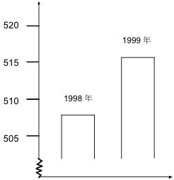
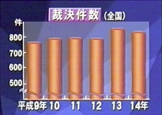

国際学力調査－文部科学省からリンクされている問題例（PDF:1,342KB リンク切れ アーカイブ）の最後に次のような「盗難事件に関する問題（PISA2000年調査及び2003年調査問題）」があります。
盗難事件
あるTVレポーターがこのグラフを示して、「1999年は1998年に比べて、盗難事件が激増しています」と言いました。
年間の盗難
事件数 このレポーターの発言は、このグラフの説明として適切ですか。適切である、または適切でない理由を説明してください。
これは省略棒グラフを使って違いを不適切に強調したものです。グラフから数値を読み取るのは微妙ですが，それぞれ508，516だとしましょう。この違いは統計的に有意でしょうか。
盗難事件が1998年に起きる確率も1999年に起きる確率も等しいという帰無仮説を立てて，Rで検定してみましょう：
> 508+516
[1] 1024
> binom.test(508,1024,0.5)
Exact binomial test
data: 508 and 1024
number of successes = 508, number of trials = 1024,
p-value = 0.8269
alternative hypothesis: true probability of success is not equal to 0.5
95 percent confidence interval:
0.4650308 0.5271792
sample estimates:
probability of success
0.4960938
というわけで，p = 0.8269 では，違いがあるとはとてもいえません。
わざわざ検定しなくても，2項分布の分散が np(1 - p) であることを使えば，p = 1/2 であるという帰無仮説のもとに分散は n/4 = 1024/4 = 256，標準偏差は 16 です。1024の半分の512からの外れ 4 は，0.25σ しかありません。計算するまでもないのですが，
> pnorm(-0.25)*2
[1] 0.8025873
で，さきほどとほぼ同じ結果になりました。
ちなみに，2項分布を正規分布で近似するのと同じことですが，χ2 分布を使って検定することもできます：
> chisq.test(c(508,516),correct=FALSE)
Chi-squared test for given probabilities
data: c(508, 516)
X-squared = 0.0625, df = 1, p-value = 0.8026
このほうが，データベクトル c(508,516)
をそのまま与えればいいだけですし，項目が増えても同じやりかたでできます。
ちなみに，項目がどんどん増えれば，各項目に入る確率 p はどんどん減るので，2項分布の分散 np(1 - p) は np に近づきます。これはその項目の度数に等しいことに注目してください。このような場合の分布をポアソン分布（Poisson distribution）といいます。ランダムに発生する事象をたくさんのビンに分けて度数を調べたときの分布がこれにあたります。盗難事件がランダムに発生するなら，毎年の盗難事件の件数はまさにポアソン分布になり，毎年の発生件数の分散は，毎年の発生件数そのものに等しくなります（標準偏差はその平方根です）。毎年100件の盗難が起きるなら，件数の標準偏差は10件で，95％信頼区間はほぼ100±20になります。
上の例は，平均512のポアソン分布の二つのビンを見ていると考えることもできます。平均512ならば，分散も512で，二つのビンの差の分散は512 + 512 = 1024になります。標準偏差はこの平方根の32で，二つのビンの差は8ですから，ちょうど標準偏差の 1/4 の違いということになり，さきほどと同じ結論になります。

高木浩光さんが日記でこのような捏造棒グラフを批判しておられます：
これは平成9〜14年の毎年の件数をNHKが右図のような捏造棒グラフにして，ほとんど違いがないものを「やや増加傾向」としたという話です。
平成9〜14年の実際のデータは次の通りです：
> x = c(762,792,795,794,849,834)
ざっと見て平均800です。ポアソン分布だとすると，標準偏差は約28で，95％信頼区間はその約2倍の幅です。データはすべてこの区間内に入っているので，単なるポアソン分布のように見えます。もうちょっとまじめに計算すると，
> mean(x)
[1] 804.3333
> var(x)
[1] 1002.667
平均と分散がほぼ等しいので，ポアソン分布っぽく見えます。
より簡単でわかりやすいのが χ2 検定です：
> chisq.test(x)
Chi-squared test for given probabilities
data: x
X-squared = 6.2329, df = 5, p-value = 0.2842
ご覧のように，p 値は 0.2842 で，毎年の件数の差は有意ではありません。
では「増加傾向にある」は間違っているのでしょうか。回帰分析をしてみればいいのですが，同じことですので，整数 1〜6 との相関係数を求めてみます：
> cor.test(1:6, x)
Pearson's product-moment correlation
data: 1:6 and x
t = 4.0055, df = 4, p-value = 0.01606
alternative hypothesis: true correlation is not equal to 0
95 percent confidence interval:
0.3034110 0.9885011
sample estimates:
cor
0.8946714
相関係数は r = 0.89 で，p 値は 0.016 と，かなり有意です。さきほどの χ2 検定の結果とどう折り合いをつければいいのでしょうか。
ここは各自で考えてみましょう。 :-)
Last modified: